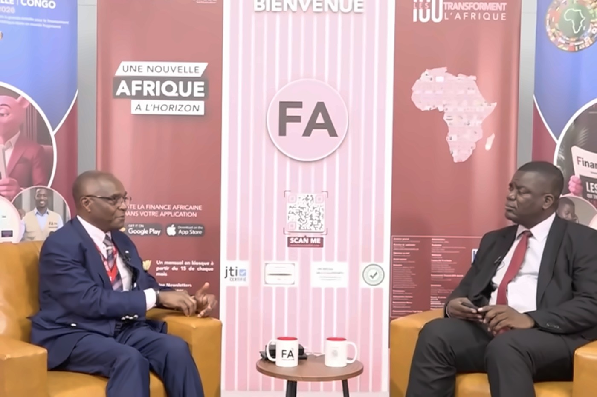
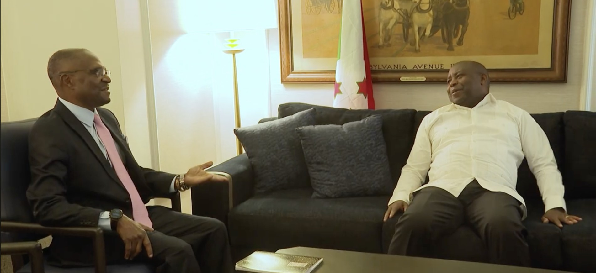
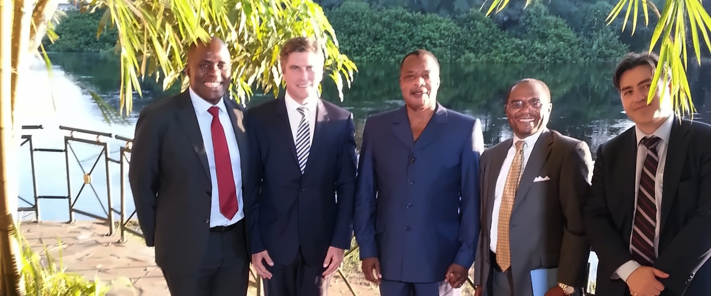

Practice / Work
Global principal investment, fund building, merchant banking, and a practical One Africa agenda.
Investing, fund building and merchant banking, with a One Africa agenda running through all three.
One discipline throughout: find real demand, locate the value, allocate risk, and test whether it can be financed, governed and scaled.
Private and public markets, directly and through SPVs, venture funds and funds of funds. Concentrated in AI and frontier technology.
Angel through Series B, with early exposure to Anthropic, OpenAI, Boom Supersonic and Databricks.
A compelling demonstration may open the door, but it is not an investment case. I look for a consequential problem, credible demand, differentiated capability, a strong team, defensible advantages, disciplined economics, and a plausible path from an initial use case to repeatable growth.
For direct venture investments, credible 10× potential is an underwriting threshold — not a prediction. Early-stage risk must be compensated by the possibility of an exceptional outcome, while valuation, concentration, dilution, and the capital required to reach scale remain equally important.
Having invested through several technology cycles, including the dot-com era, I learned that enthusiasm, capital, and credible-looking narratives can travel together for longer than fundamentals justify. Not every lesson came cheaply. The scars no longer hurt, but the lessons are embedded in my investment doctrine: distinguish adoption from attention, protect against valuation excess, understand how much capital a company will require, and never confuse an impressive technology with a durable business.
Hype rarely disappears all at once. It fractures. Durable companies survive because customers continue to value what they provide after attention and easy capital have moved elsewhere.

A fund starts with a differentiated thesis, a market worth entering and disciplined portfolio construction — not just commitments.
Current focus: AfrAIxport Fund, backing pre-seed and seed African AI companies with real demand and cross-border potential.
The thesis reflects a practical One Africa conviction. African founders should not be confined by fragmented national markets. Companies capable of serving customers across the continent — and ultimately competing globally — can build larger businesses, attract more appropriate capital, and contribute to shared economic competitiveness.
Building such a platform requires more than selecting companies. It requires alignment with limited partners, access to capable founders, disciplined reserves, institutional governance, reliable reporting, and networks that can help portfolio companies secure customers, talent, follow-on capital, and entry into new markets.
The objective is not to finance more experiments. It is to help build competitive companies, and an ecosystem in which each successful company increases the probability of the next.
Through Sterling Merchant Finance, I structure complex transactions across Africa and emerging markets: capital raising, project finance, PPPs, M&A and restructuring.
Most mandates start promising but not yet financeable. The job is to find what stops capital committing, and redesign around it.
More than three decades of working with governments, development institutions, corporations, sponsors, and investors have taught me that capital is rarely the only constraint. Transactions also fail because responsibilities are unclear, incentives are misaligned, risks sit with parties unable to carry them, or no credible path connects the proposal to execution.
Strategic advisory is therefore selective and senior-led. I become involved where judgment, structuring experience, institutional relationships, and sustained engagement can materially change the outcome, not where a client simply needs another report.
This also extends to institutions confronting consequential AI decisions: where AI genuinely belongs, what measurable value it should create, how it should be governed, and what deployment will cost after integration, oversight, and organizational change are properly considered.
Where conviction and interests align, Sterling may invest its own capital, participate in the resulting platform, or share in the long-term value it helps create.

Not every investment is financial. I support foundations, churches and humanitarian work in the US, Africa and the Holy Land.
One began when my son, then twelve, set out to widen access to clean water. It became Vidagua Foundation, a U.S. nonprofit.
Vidagua works to expand access to safe drinking water through filtration systems for schools and homeless shelters in the United States and water solutions for underserved communities in developing countries. Its work reflects a simple principle: clean water is fundamental to health, dignity, education, and sustainable human development.
Helping a young person turn concern into an institution reinforced something I have seen throughout my career: consequential change often begins before the person pursuing it has conventional credentials, abundant resources, or permission from established institutions. What matters first is conviction — and then the discipline to build around it.
My broader social engagement follows the same principle: strengthen institutions already serving people, help practical initiatives move from goodwill to execution, and invest time, relationships, and resources where they can create lasting human value.
Countries keep their identities and sovereignty, and build the shared capabilities needed to compete globally.
An economic proposition, not a slogan. Fragmented markets produce small companies and duplicated infrastructure; connected markets create scale, investment and a path to global leadership.
The opportunities now emerging — in artificial intelligence, trade, financial services, energy, infrastructure, healthcare, agriculture, and the creative economy — will not reach their full potential if they remain confined within national borders. Africa needs interoperable systems, trusted institutions, connected infrastructure, regional capital, and companies designed to serve multiple markets from the beginning.
Shared competitiveness does not mean that every country advances in the same sectors or at the same speed. It means that the success of one country, institution, or company strengthens the capabilities available to others — and that Africa competes globally with the advantage of a larger, connected economic space.
This conviction connects all my work. Principal investment helps promising companies emerge. Fund building gives them appropriate capital. Merchant banking connects opportunity to execution. Social engagement ensures that economic progress remains anchored in human dignity and shared prosperity.
The ambition is not merely for Africa to participate in the industries of the future. It is for African companies, institutions and ideas to help shape them.

One continent. Many strengths. A shared competitive future.